Reading & Comparing Data — Practice Set
Bank code: DAT-RCD · Section: Data Interpretation · 30 questions — Easy 7 · Medium 16 · Hard 7
Read the title and the units before the numbers; most DI questions are a ratio, a percent change or a comparison, and one exhibit usually serves several questions.
Every question below is live in the question bank under the ID shown — the sheet and the portal are the same questions. Attempt a level with the clock running, then check Part C.
Part A — Questions
Quantitative Comparison — the four choices are always the same, so they are not reprinted: (A) Quantity A is greater · (B) Quantity B is greater · (C) The two quantities are equal · (D) The relationship cannot be determined from the information given
Level 1 · Easy — 7 questions · ~6 min
warm-up — these must be automatic
Q1 · DAT-RCD-001 · MCQ · 45s
The bar graph below shows the monthly sales, in units, of a bookstore from January through May.
What was the total number of units sold across all five months?
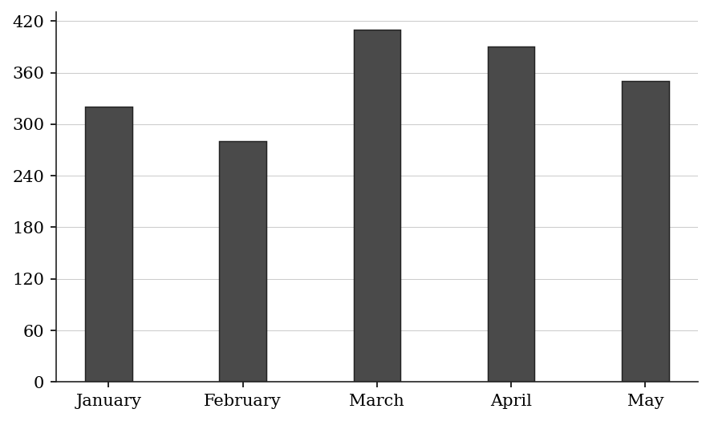
(A) 350
(B) 1,400
(C) 1,740
(D) 1,750
(E) 1,800
Q2 · DAT-RCD-004 · QC · 50s
The table below shows the population (in thousands) of five cities:
City A: 450 City B: 380 City C: 520 City D: 410 City E: 490
Quantity A: The range of the population values (max - min) Quantity B: 150
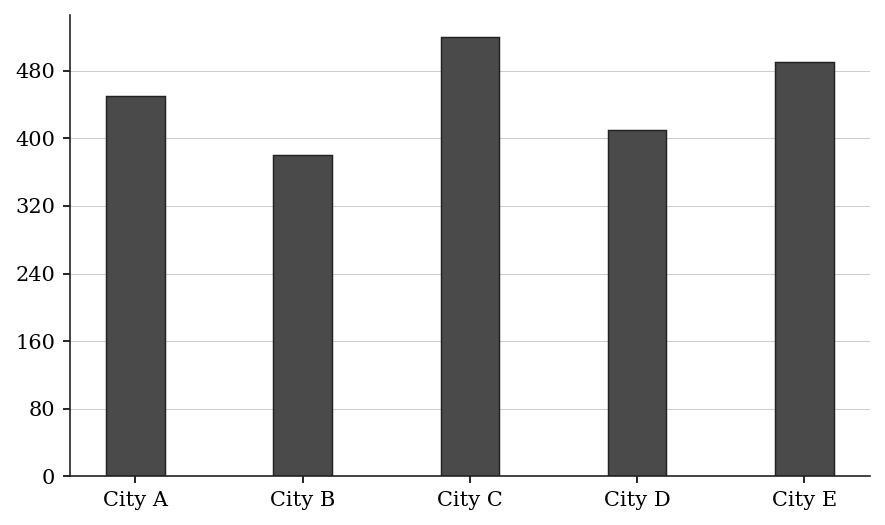
Q3 · DAT-RCD-005 · Numeric Entry · 55s
The table below shows the annual rainfall (in millimeters) recorded in a city over five years:
What is the average (arithmetic mean) annual rainfall over these five years? Give your answer in millimeters.
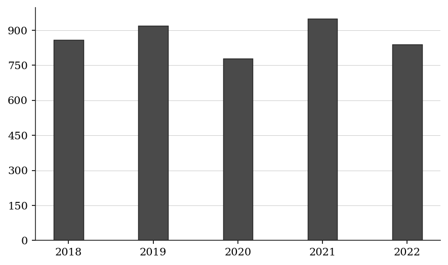
Numeric entry — write the number.
Q4 · DAT-RCD-006 · MCQ · 35s
The table below shows the number of customer complaints received per month at a service center:
In which month were the fewest complaints received?
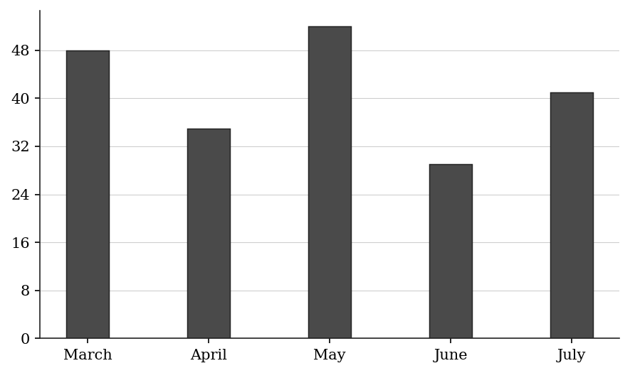
(A) March
(B) April
(C) May
(D) June
(E) July
Q5 · DAT-RCD-010 · Select all that apply · 55s
The table below shows the number of products sold each day of the week at a retail store:
Which of the following days on sales were below 115 units?
Select all that apply.
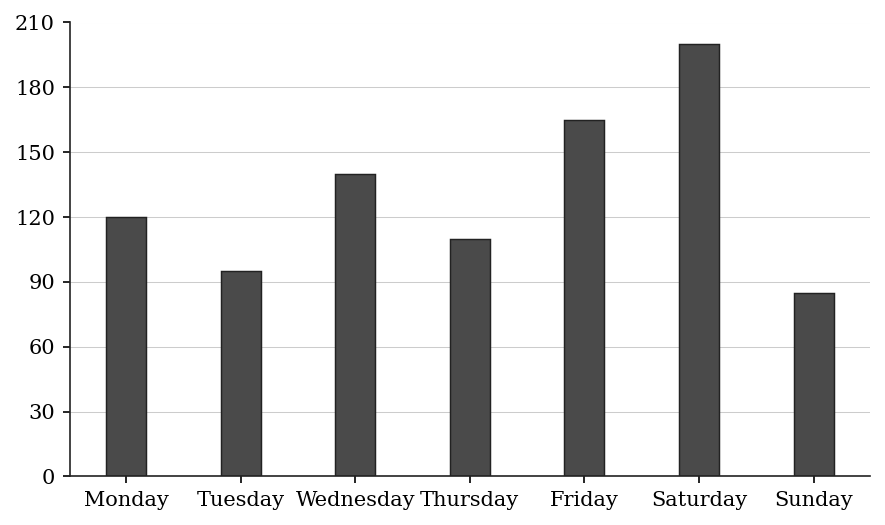
(A) Monday
(B) Tuesday
(C) Thursday
(D) Friday
(E) Sunday
Q6 · DAT-RCD-013 · MCQ · 75s
The table below shows electricity consumption (in kWh) and cost per kWh for three months:
June: 400 kWh at $0.12/kWh
July: 600 kWh at $0.12/kWh
August: 500 kWh at $0.15/kWh
What was the total electricity bill for the three-month period?
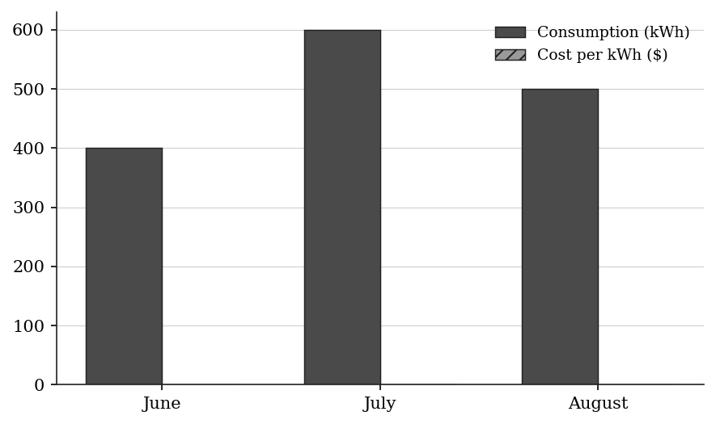
(A) $168.00
(B) $180.00
(C) $195.00
(D) $204.00
(E) $216.00
Q7 · DAT-RCD-015 · Numeric Entry · 65s
The table below shows the market share (in percent) of five smartphone brands in a country:
If the total smartphone market in this country is 8 million units, how many units (in millions) do Brand A and Brand B together account for?
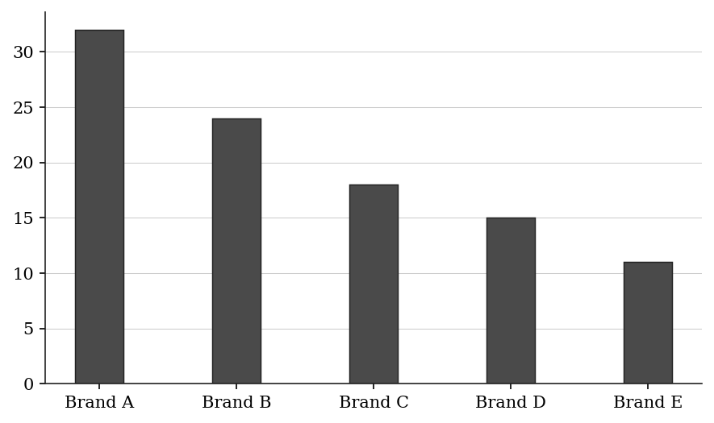
Numeric entry — write the number.
Level 2 · Medium — 16 questions · ~22 min
two or three steps, one planted trap each
Q8 · DAT-RCD-011 · MCQ · 75s
The table below shows the number of units sold and the price per unit for four products:
Product A: 200 units at $15 each
Product B: 350 units at $8 each
Product C: 120 units at $25 each
Product D: 480 units at $6 each
Which product generated the highest total revenue?
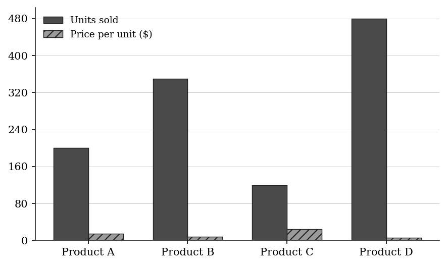
(A) Product A
(B) Product B
(C) Product C
(D) Product D
(E) Products A and C generated the same total revenue
Q9 · DAT-RCD-012 · MCQ · 80s
The bar graph below shows the number of visitors to a museum each year:
In which year did the museum experience the greatest year-over-year INCREASE in visitors?
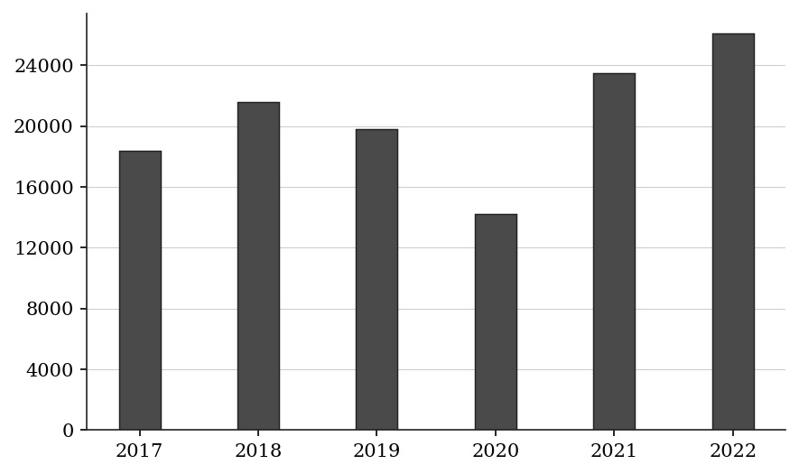
(A) 2018
(B) 2019
(C) 2020
(D) 2021
(E) 2022
Q10 · DAT-RCD-014 · QC · 80s
The number of books borrowed from a library each month was: January 1,240; February 980; March 1,150; April 1,320; May 1,060; June 1,180.
Quantity A: The average (mean) number of books borrowed per month Quantity B: 1,150
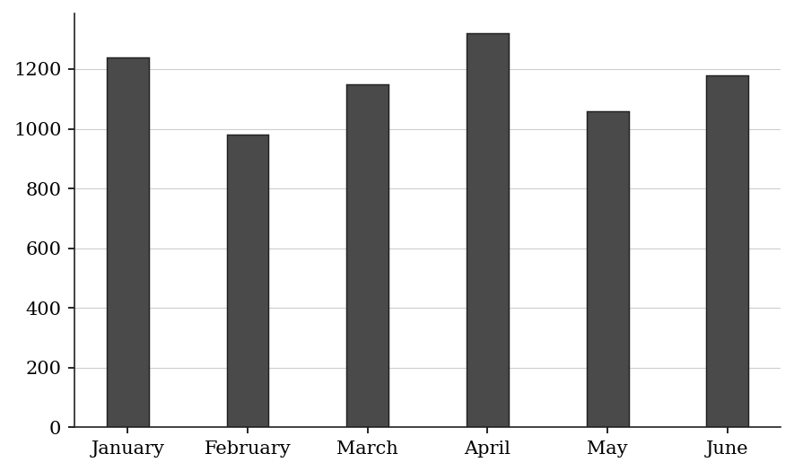
Q11 · DAT-RCD-016 · MCQ · 70s
The table below shows the number of students enrolled in five courses at a college:
What fraction of the total enrollment is in Statistics? (Reduce to lowest terms.)
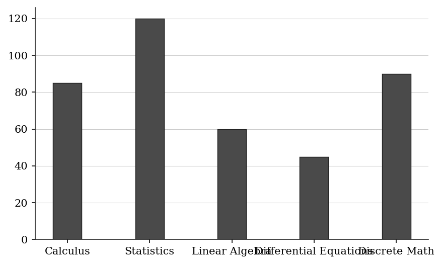
(A) 6/25
(B) 2/7
(C) 3/10
(D) 4/13
(E) 1/3
Q12 · DAT-RCD-019 · Numeric Entry · 80s
The table below shows scores (out of 100) that a student received on six quizzes:
The teacher drops the lowest score before computing the final average. What is the student's final average score? Round to the nearest whole number.
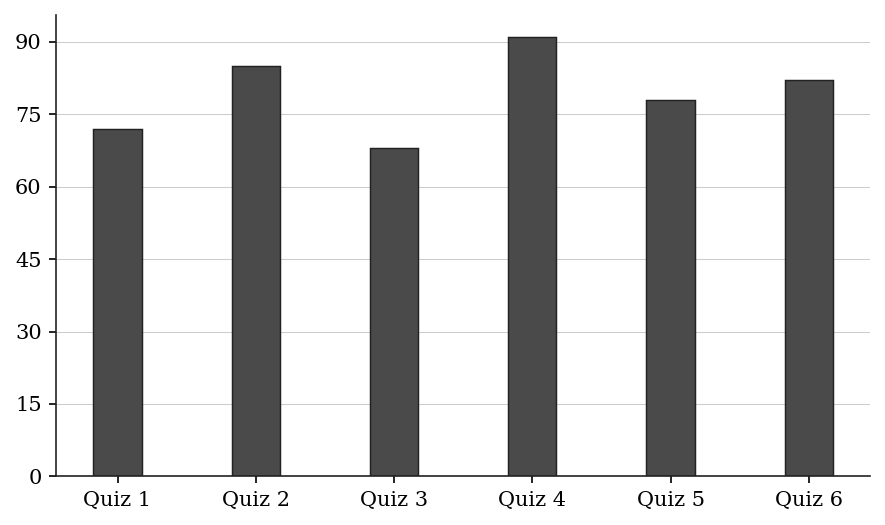
Numeric entry — write the number.
Q13 · DAT-RCD-021 · MCQ · 80s
The table below shows the number of items sold by three salespeople in four regions:
North South East West
Sarah 140 95 110 130
James 80 125 160 90
Linda 105 70 85 145
Which salesperson had the highest TOTAL sales across all four regions?
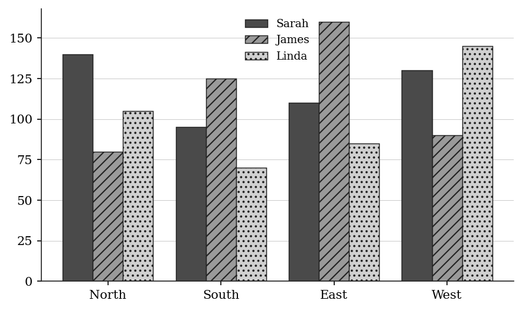
| Salesperson | North | South | East | West |
|---|---|---|---|---|
| Sarah | 140 | 95 | 110 | 130 |
| James | 80 | 125 | 160 | 90 |
| Linda | 105 | 70 | 85 | 145 |
(A) Sarah
(B) James
(C) Linda
(D) Sarah and James are tied
(E) James and Linda are tied
Q14 · DAT-RCD-024 · Select all that apply · 65s
A support team resolved the following numbers of tickets in weeks 1 to 8: 220, 195, 240, 210, 230, 185, 250, 200. The team's target is at least 215 tickets per week. In which of the following weeks did the team meet or exceed the target? Indicate all such weeks.
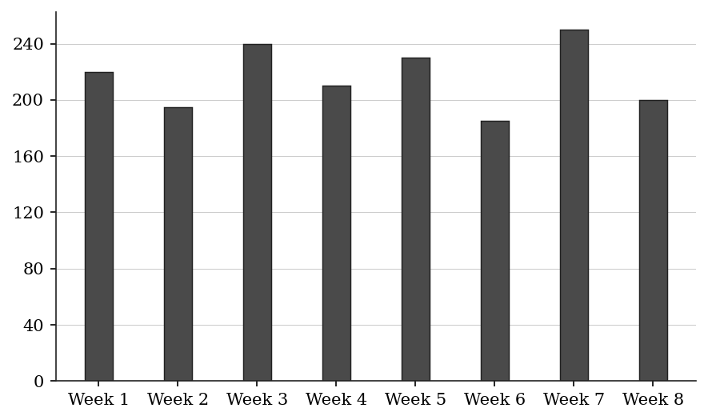
(A) Week 1
(B) Week 3
(C) Week 4
(D) Week 5
(E) Week 7
Q15 · DAT-RCD-025 · Select all that apply · 90s
The table below shows the annual revenue (in millions) and annual cost (in millions) for five product lines:
Line A: Revenue $80M, Cost $55M
Line B: Revenue $120M, Cost $95M
Line C: Revenue $65M, Cost $48M
Line D: Revenue $95M, Cost $80M
Line E: Revenue $110M, Cost $72M
Which of the following product lines have a profit margin (profit ÷ revenue) greater than 25 percent?
Indicate all such product lines.
(A) Line A
(B) Line B
(C) Line C
(D) Line D
(E) Line E
Q16 · DAT-RCD-026 · QC · 90s
The table below shows the number of cars sold by a dealership each month for two consecutive years:
Year 1 Year 2
Quantity A: Total cars sold in Year 1 (Jan–Jun) Quantity B: Total cars sold in Year 2 (Jan–Jun)
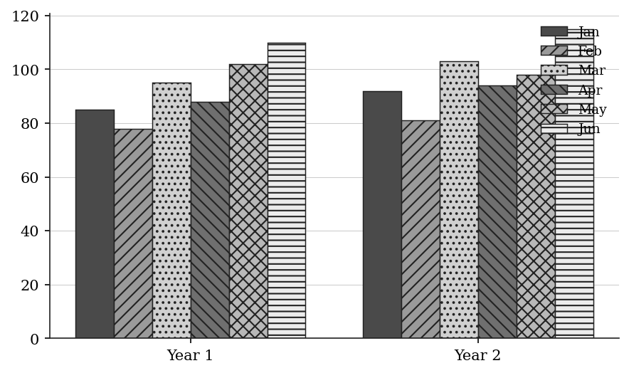
Q17 · DAT-RCD-038 · QC · 120s
The table below shows the annual sales (in thousands of dollars) for a retailer across three store locations:
Quantity A: The median of the three locations' annual total sales Quantity B: The arithmetic mean of the three locations' annual total sales
| Location | Q1 Sales | Q2 Sales | Q3 Sales | Q4 Sales |
|---|---|---|---|---|
| North | $180K | $220K | $195K | $240K |
| South | $150K | $160K | $210K | $280K |
| East | $200K | $175K | $230K | $195K |
Q18 · DAT-RCD-KMF2-002 · MCQ · 75s
SURVEY RESULTS
A survey of 420 part-time employees and 580 full-time employees was conducted. All 1,000 of the employees surveyed indicated whether, for each of five factors, the factor is important to consider when choosing a workplace. For each of the five factors, the percent of the employees surveyed who indicated that factor as important to consider is given in the table.
The number of employees surveyed who indicated training programs as important to consider was approximately what percent of the number who indicated flexible hours as important to consider?
| Factor | Percent |
|---|---|
| Flexible hours | 72% |
| Commute time | 64% |
| Health benefits | 58% |
| Training programs | 45% |
| On-site parking | 30% |
(A) 27%
(B) 45%
(C) 63%
(D) 72%
(E) 160%
Q19 · DAT-RCD-KMF2-003 · Numeric Entry · 85s
SURVEY RESULTS
A survey of 420 part-time employees and 580 full-time employees was conducted. All 1,000 of the employees surveyed indicated whether, for each of five factors, the factor is important to consider when choosing a workplace. For each of the five factors, the percent of the employees surveyed who indicated that factor as important to consider is given in the table.
If 38 percent of the employees surveyed indicated both commute time and health benefits as important to consider, what percent of the employees surveyed indicated neither of these two factors as important to consider?
| Factor | Percent |
|---|---|
| Flexible hours | 72% |
| Commute time | 64% |
| Health benefits | 58% |
| Training programs | 45% |
| On-site parking | 30% |
Numeric entry — write the number.
Q20 · DAT-RCD-KMF2-004 · MCQ · 75s
NUMBER OF PRINTERS OWNED BY A RANDOM SAMPLE OF 750 OFFICES
If one of the 750 offices were selected at random, what is the probability that the office selected would own more than 2 printers?
| Number of Printers Owned | Number of Offices |
|---|---|
| At least 1 | 750 |
| At least 2 | 480 |
| At least 3 | 180 |
| At least 4 | 55 |
| At least 5 | 12 |
(A) 2/125
(B) 11/150
(C) 6/25
(D) 2/5
(E) 16/25
Q21 · DAT-RCD-KMF2-008 · MCQ · 85s
ANNUAL PER CAPITA CONSUMPTION OF THREE FOODS IN COUNTRY R, FOR SELECTED YEARS
in pounds
Let a, b, and c represent the ranges of the annual per capita consumption of cheese, poultry, and ice cream, respectively, for the six years shown. Which of the following is true?
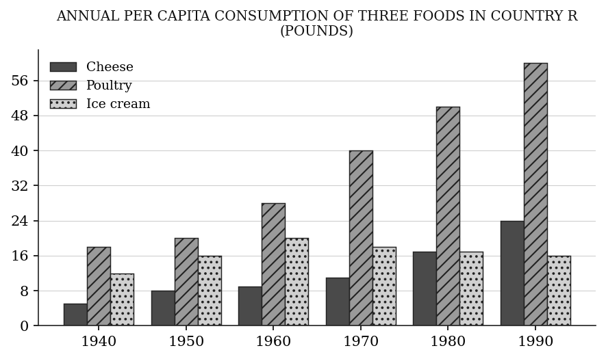
(A) a > b > c
(B) a > c > b
(C) b > a > c
(D) b > c > a
(E) c > a > b
Q22 · DAT-RCD-KMF2-009 · MCQ · 85s
MAXIMUM AND MINIMUM WATER DEPTHS OF SEVEN LAKES
in feet
Each point represents one lake.
For exactly three of the seven lakes, the maximum depth is greater than that of a certain one of the lakes, and for exactly three it is less. Which lake is that?

(A) Arrow
(B) Cobalt
(C) Dunlin
(D) Elkhorn
(E) Grayling
Q23 · DAT-RCD-KMF2-013 · Numeric Entry · 75s
NUMBER OF TEACHERS AND NUMBER OF SUPPORT STAFF AT 20 SCHOOLS
Each point represents one school.
What percent of the 20 schools have fewer than 52 teachers?

Numeric entry — write the number.
Level 3 · Hard — 7 questions · ~12 min
where 162+ is won or lost
Q24 · DAT-RCD-027 · MCQ · 95s
The table below shows the population (in thousands) of a city and the percentage of the population that uses public transit, for each year from 2018 to 2022:
2018: Population 840K, Transit users 34%
2019: Population 880K, Transit users 32%
2020: Population 860K, Transit users 35%
2021: Population 910K, Transit users 30%
2022: Population 950K, Transit users 28%
In which year was the NUMBER of transit users the highest?
(A) 2018
(B) 2019
(C) 2020
(D) 2021
(E) 2022
Q25 · DAT-RCD-028 · MCQ · 100s
The table below shows the quarterly sales figures (in units) and the average selling price per unit (in dollars) for a company over one year:
Q1: 1,200 units at $45/unit
Q2: 1,500 units at $42/unit
Q3: 1,350 units at $48/unit
Q4: 1,600 units at $40/unit
By what percent did Q3 revenue exceed Q2 revenue? Round to one decimal place.
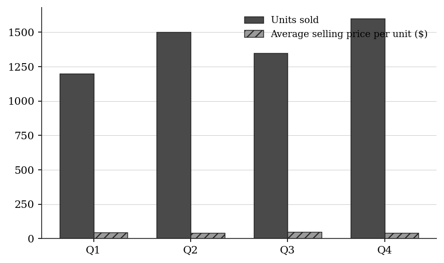
(A) 1.4%
(B) 2.9%
(C) 4.8%
(D) 6.3%
(E) 8.6%
Q26 · DAT-RCD-029 · QC · 95s
The table below shows the number of students in each grade at a school, along with the fraction who participate in at least one sport:
Grade 9: 180 students, 2/5 participate in sports
Grade 10: 210 students, 3/7 participate in sports
Grade 11: 160 students, 9/16 participate in sports
Grade 12: 190 students, 7/19 participate in sports
Quantity A: Number of Grade 10 sports participants Quantity B: Number of Grade 11 sports participants
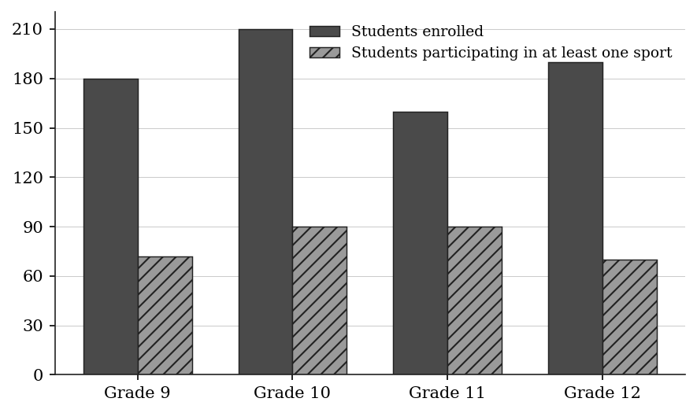
| Grade | Students | Fraction participating in sports |
|---|---|---|
| Grade 9 | 180 | 2/5 |
| Grade 10 | 210 | 3/7 |
| Grade 11 | 160 | 9/16 |
| Grade 12 | 190 | 7/19 |
Q27 · DAT-RCD-034 · Select all that apply · 110s
The table shows enrollment and average GPA for four university departments:
Computer Science: 400 students, average GPA 3.2
Economics: 300 students, average GPA 3.4
Biology: 200 students, average GPA 3.0
History: 100 students, average GPA 3.8
The combined GPA of any group of departments is the average of their GPAs weighted by enrollment. GPA-points means enrollment × average GPA.
Which of the following statements are true?
Indicate all such statements.
(A) The overall GPA of all four departments is greater than 3.50.
(B) Economics contributes more GPA-points than History.
(C) The combined GPA of the departments other than Biology is greater than 3.55.
(D) History has the highest average GPA of the four departments and the fewest GPA-points.
(E) The combined GPA of Computer Science and Economics is less than 3.55.
Q28 · DAT-RCD-KMF2-001 · Select all that apply · 110s
SURVEY RESULTS
A survey of 420 part-time employees and 580 full-time employees was conducted. All 1,000 of the employees surveyed indicated whether, for each of five factors, the factor is important to consider when choosing a workplace. For each of the five factors, the percent of the employees surveyed who indicated that factor as important to consider is given in the table.
Which of the following statements about the employees surveyed must be true?
Indicate all such statements.
| Factor | Percent |
|---|---|
| Flexible hours | 72% |
| Commute time | 64% |
| Health benefits | 58% |
| Training programs | 45% |
| On-site parking | 30% |
(A) Fewer than 45 percent of the employees surveyed were part-time employees.
(B) Of the full-time employees, more indicated flexible hours as important to consider than indicated health benefits as important to consider.
(C) At least 140 of the part-time employees indicated flexible hours as important to consider.
(D) Fewer than 60 percent of the full-time employees indicated health benefits as important to consider.
(E) More than half of the employees surveyed indicated commute time as important to consider.
Q29 · DAT-RCD-KMF2-011 · Numeric Entry · 115s
MAXIMUM AND MINIMUM WATER DEPTHS OF SEVEN LAKES
in feet
Each point represents one lake.
In how many pairs of lakes is the lake with the greater maximum depth also the lake with the smaller minimum depth?
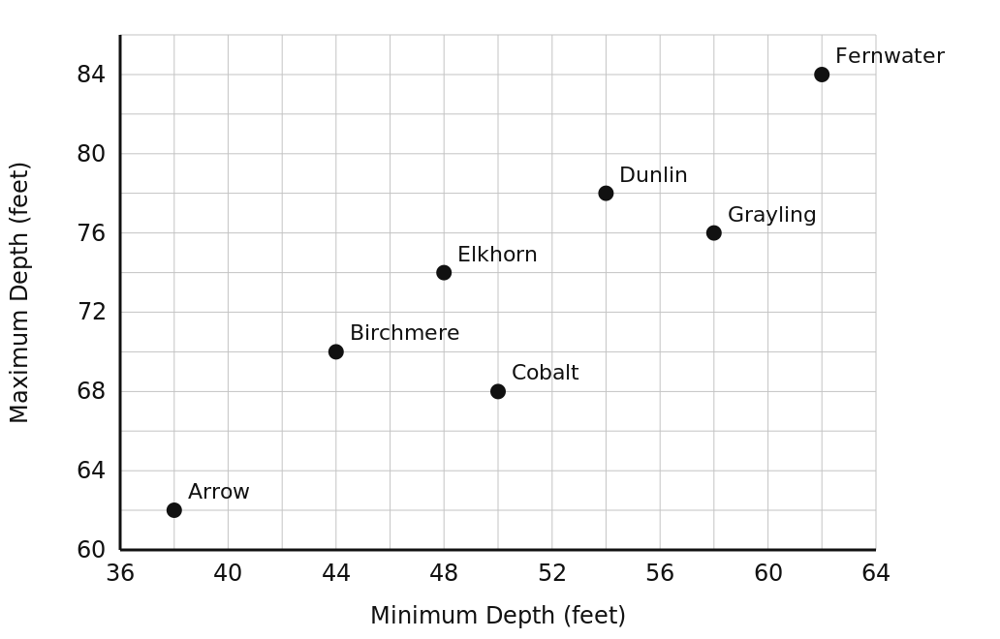
Numeric entry — write the number.
Q30 · DAT-RCD-KMF2-015 · MCQ · 125s
NUMBER OF TEACHERS AND NUMBER OF SUPPORT STAFF AT 20 SCHOOLS
Each point represents one school.
Two of the 20 schools will be selected at random, one at a time and without replacement. Approximately what is the probability that at least one of the two schools selected has more support staff than teachers?
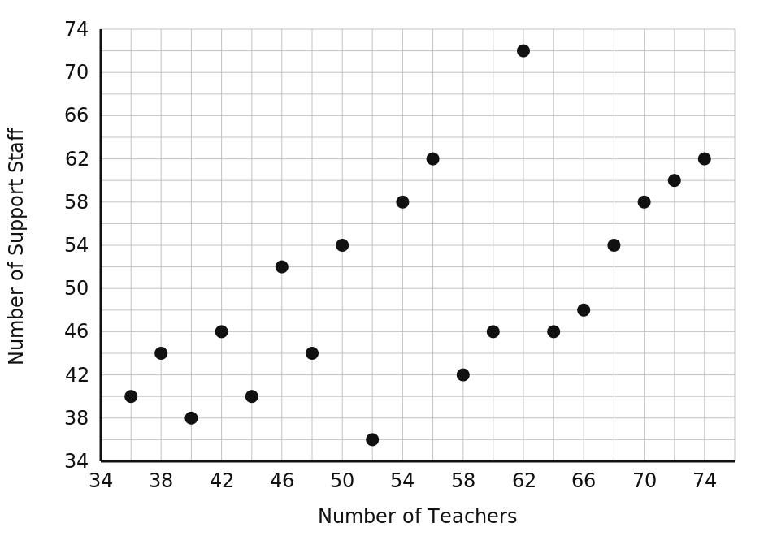
(A) 0.35
(B) 0.40
(C) 0.55
(D) 0.65
(E) 0.80
The rest of this sheet is part of Pro
All 30 questions, the answer key and full worked solutions with every trap named — plus 75 concept notes and 5,868 questions.